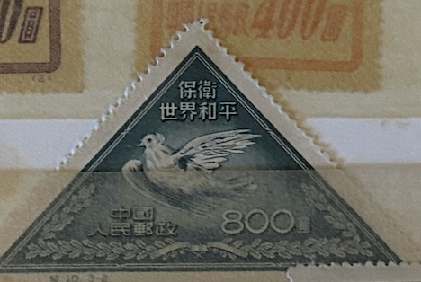
| SOURCE | TITLE| IMAGE MATCH | click to source page |
| www.ebay.com | PEOPLES REPUBLIC OF CHINA SCOTT 110 MNG VF REPRINT - 1951 ... | 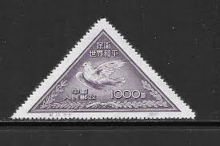 |
| www.ebay.com | PRC China Stamps: 1951 Picasso Dove, Short Set SC 108, 110 ... | 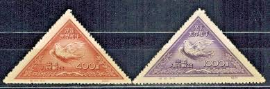 |
| www.etsy.com | VTG 1951 Chinese Defend World Peace Stamp, Picasso Dove ... | 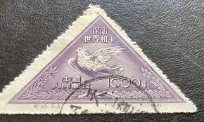 |
| www.hipstamp.com | China 1951 Peace Dove 800$ (TS-1306) | Asia - China, Stamp ... | 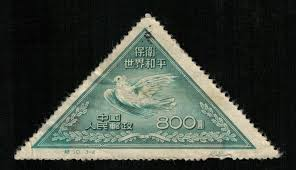 |
| www.etsy.com | Postage Stamps / Sets - Lots / Rare Stamps of China / 1951 ... | 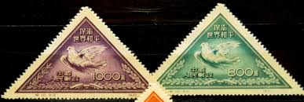 |
| www.ebay.com | PEOPLES REPUBLIC OF CHINA SCOTT 108 USED VF RPT (B)- 1951 ... | 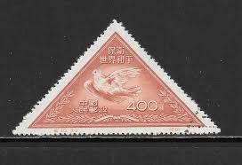 |
| www.facebook.com | 📬 Communist Poland Stamp from 1951 🇵🇱 A relic of ... |  |
| www.shutterstock.com | China Circa 1951 Triangle Shape Post Stock Photo 130943291 ... | 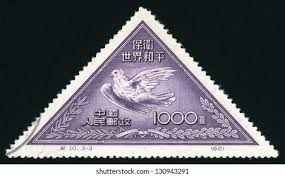 |
| www.hipstamp.com | China PRC - 1951 - Scott #110 - unused - Peace Bird Dove ... | 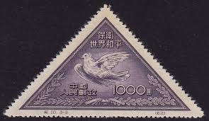 |
| www.alamy.com | China stamp bird hi-res stock photography and images - Alamy | 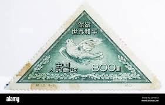 |
| www.jaysmith.com | Jay Smith & Associates: World: Asia: China - PRC - Peoples ... | 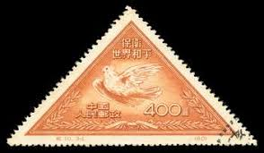 |
| www.facebook.com | S በ 出· American ISTORIO Tohn F. Kennedy Coin Stamp ... |  |
| www.ebay.com | CHINA SCOTT 110 STAMP MNH NO GUM 9611M | eBay | 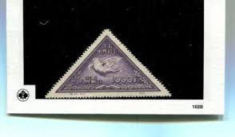 |
| chinesestamp.org | C010/JI10/纪10, Defend World Peace (2nd Set)《保卫世界和平 ... | 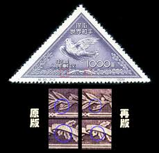 |
| www.shutterstock.com | China Prc 1950 August 1 400 Stock Photo 2194447335 ... |  |
| www.osta.ee | Hiina 1951,rahutuvi,MNH,1000 (226281311) - Osta.ee | 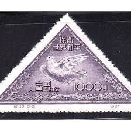 |
| www.hipstamp.com | China-1951-Sc#108-110 Picasso Painting-Peace Dove-Fancy ... |  |
| jp.mercari.com | 紀10 世界の平和を守れ（第2次）（未使用2枚、使用済み1枚、3種 ... | 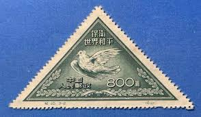 |
| www.stampcommunity.org | Doves As Symbols Of Peace - Stamp Community Forum | 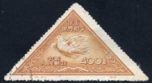 |
| www.lastdodo.com | Pablo Picasso [1881-1973] Stamp catalogue - LastDodo |  |
| www.todocoleccion.net | china 1951- nuevos - sin goma- paloma picaso - Compra venta ... | 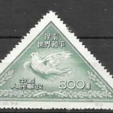 |
| www.mysticstamp.com | MP1943 - Triangle-Shaped Stamps, 200 Different - Mystic ... | 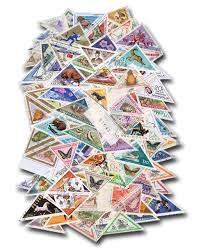 |
| www.freestampcatalogue.com | Stamps from China People's Republic - Freestampcatalogue.com ... | 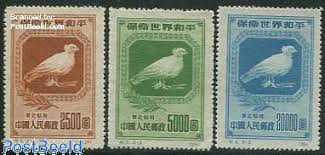 |
| wenhui.whb.cn | 三角形，面值1000元，新中国最早一批纪念和特种邮票这个样 | 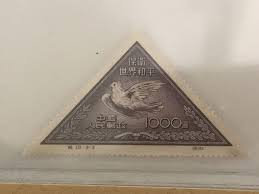 |
| colnect.com | Briefmarke: Dove of Peace by Picasso (reprint) (China ... | 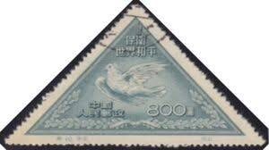 |
| findyourstampsvalue.com | Value of 毕节哪里有拍肩粉买卖(购买V信29153204）渠道稳定质量 ... | 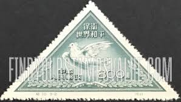 |
| littlepostagehouse.com | Search for Peace Postage Stamp — Little Postage House | 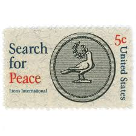 |
| www.bobshop.co.za | China - 1951 China peace dove triangles 2 used & 1 unused ... |  |
| www.reddit.com | Inherited these Chinese Stamps are they worth anything? : r ... | 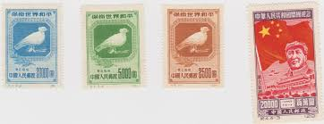 |
| www.facebook.com | Hallo, may be China Stamps??? |  |
| www.518yp.com | 纪10邮票，保卫世界和平(第二组),价格,图片,最新 | 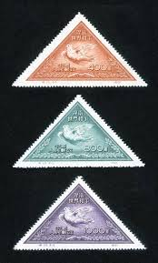 |
| www.xabusiness.com | C10 Scott 108-110 Defend World Peace (2nd Set) - China Stamps |  |
| www.mgrove.com | 1467:: =RARE= Stamps, Communist China Empire, PRC, 1949 ... | 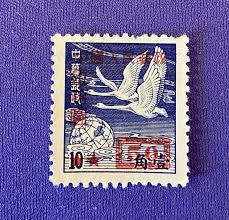 |
| www.mysticstamp.com | MP1944 - Triangle-Shaped Stamps, 50 Different - Mystic Stamp ... | 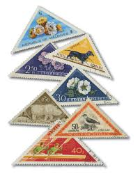 |
| margipood.ee | c-10 1951 - Margipood |  |
| duckstamp.com | Collector's Envelope - 2025 First Day Cover Silk Cachet ... | 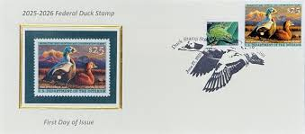 |
| market.yandex.ru | Кампания за мир: Голубь мира Пикассо. Китай (КНР). 1955 ... | 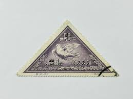 |
| tw.bid.yahoo.com | 全新嚴選紀10再版新票一組全品配票專貼新中國紀特文編郵票單枚 ... | 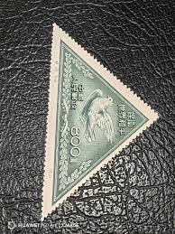 |
| www.hipstamp.com | China Stamps: 1951 Sc#110-World Peace-Mint Stamps- 69 ... | 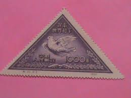 |
| margipood.ee | China - Page 8 of 44 - Margipood |  |
| www.carousell.sg | China Stamps C10 MNH NGAI, Hobbies & Toys, Memorabilia ... | 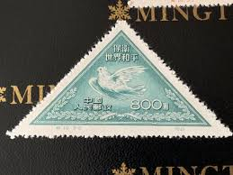 |
| chinageeksarchive.wordpress.com | Book Review: Such Is This World@sars.come | chinageeksarchive |  |
| www.yzzs.cc | 探寻中国邮政纪念邮票中动物形象- 集邮- 仪征之声 |  |
| en.todocoleccion.net | f-ex28169 vanuatu mnh 1996 ethnography aborigen - Buy Stamps ... | 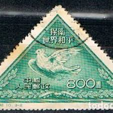 |
| www.ebay.com | China (PRC) 1951 Sc#108-110 "World Peace (Picasso Dove ... |  |
| www.cosmos.so | stamps (@liinnaa) / Cosmos | 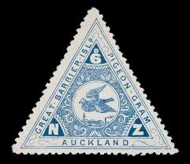 |
| www.scgwys.com | 四川古玩古董|钱币邮票|纪10邮票 | 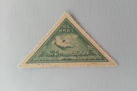 |
| www.freestampcatalogue.com | Stamps from Japan - Freestampcatalogue.com - The free online ... | 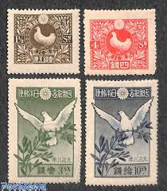 |
| collectables.nzpost.co.nz | Centenary of Pigeon-gram - NZ Post Collectables | 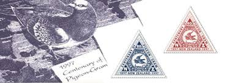 |
| www.protofilia.it | francobollo CINA REPUBLICA POPOLARE 1951 YT 905 usato “Peace ... | 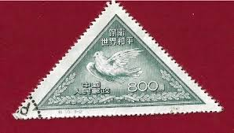 |
| www.518yp.com | 邮票按形状和所用材料的分类,图片,价格,收藏 | 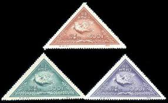 |
| jp.mercari.com | 中國人民郵政 保衛世界和平 三角切手4枚 - メルカリ | 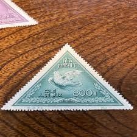 |
| www.instagram.com | Found while strumming through vintage Shonen King. They took ... | 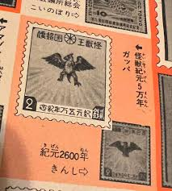 |
| tw.bid.yahoo.com | 嚴選紀10原版信銷精品郵票，新中國早期信銷上品無薄裂缺，收藏級 ... | 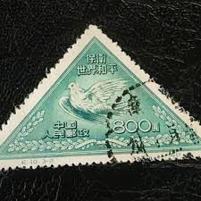 |
| aukro.cz | ZNÁMKY STARÉ ČÍNA HOLUBICE | Aukro |  |
| jenikirbyhistory.getarchive.net | 12 Stamps of china 1951 Images: PICRYL - Public Domain Media ... | 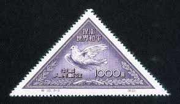 |
| www.etsy.com | You Only Live Twice 50 Vintage Japanese Postage Stamps Japan ... | 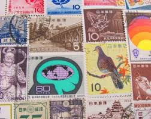 |
| www.osta.ee | Hiina 1951,Picasso tuvi (158899369) - Osta.ee | 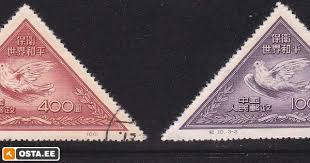 |
| www.stampcollectingblog.com | Definitive postage stamps of Japan: “Animal, plant and ... | 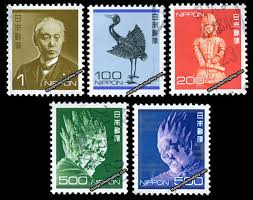 |
| stampaday.wordpress.com | National Stamp Collecting Month: Mail by Pigeons – A Stamp A Day | 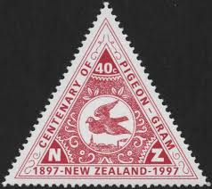 |